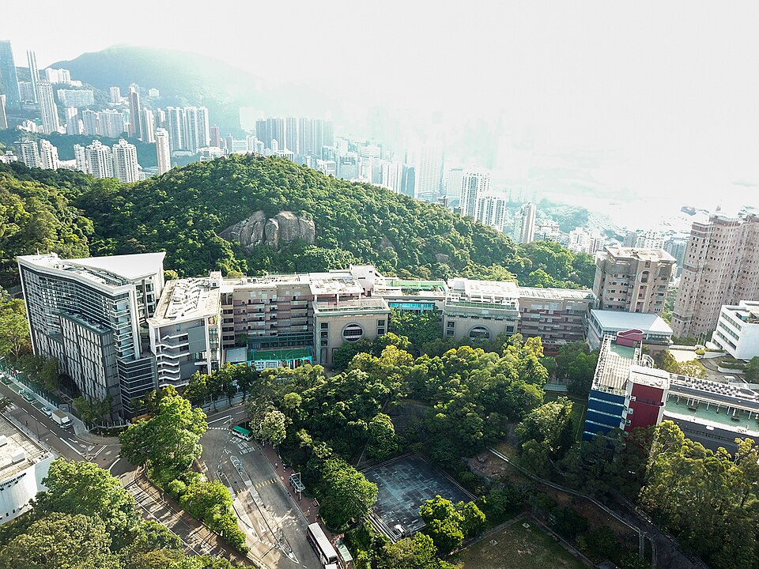

차이니즈 인터내셔널 스쿨 브레이머힐 캠퍼스 일대(2018) · 사진: Wpcpey / Wikimedia Commons, CC BY-SA 4.0
차이니즈 인터내셔널 스쿨(Chinese International School, 홍콩 CIS) — 영어·중국어 이중언어 IB 학교, 보통화 부담 줄이는 법
1. 차이니즈 인터내셔널 스쿨은 어떤 학교인가
CIS는 1983년 개교로 알려진 홍콩의 비영리 이중언어 국제학교입니다.
· 캠퍼스 — 홍콩섬 북부 브레이머힐(Braemar Hill)에 있으며, 1991년에 이 캠퍼스로 옮긴 것으로 알려져 있습니다. 노스포인트·텐하우 생활권에서 접근하는 위치입니다.
· 학년 — 유치부(Reception)부터 Year 13까지 한 학교에서 이어지는 것으로 알려져 있습니다.
· 교육과정 — IB 계열입니다. 초등은 PYP, Year 7~9는 MYP, Year 10~11은 학교가 자체 설계한 과정, Year 12~13은 IB 디플로마(DP)로 이어지는 구조로 알려져 있습니다.
· 언어 — 영어와 보통화(Mandarin) 이중언어. 초등에서는 두 언어에 비슷한 시간을 배분하고, 중등으로 올라가면 수업은 주로 영어로 하되 보통화를 수준별로 필수 이수하는 방식으로 알려져 있습니다.
· IB 이력 — 홍콩에서 IB 디플로마를 가장 먼저 도입한 학교로 알려져 있습니다.
홍콩에서 우리 아이가 갈 만한 학교를 놓고 비교하면 성격이 이렇게 갈립니다.
| 구분 | CIS | HKIS | CDNIS |
|---|---|---|---|
| 교육과정 | IB(PYP·MYP·DP) | 미국식 + AP | IB + 캐나다 졸업장 |
| 학습 언어 | 영어 + 보통화(이중언어) | 영어 | 영어 |
| 한국 학생 관문 | 중국어 배치 수준 | AP 내신 관리 | 졸업장 두 갈래 설계 |
※ 학년 구분·개설 과정·모집 일정은 바뀔 수 있습니다. 학교 요강을 직접 확인하세요. 학비·정원·합격률 등 변동 수치는 이 글에서 다루지 않습니다.
2. 한국(주재원) 학생이 겪는 어려움
· 언어가 둘이다. 다른 국제학교는 “영어만 따라가면” 되지만, CIS는 중국어까지 학습 언어입니다. 영어에 겨우 적응했는데 보통화 과제가 또 밀려오는 구조라, 아이가 체감하는 부담이 두 배입니다.
· 중국어 배치가 출발선을 정한다. 보통화를 수준별로 나눠 배우는 만큼, 처음 어느 반에 배치되느냐가 이후 몇 년을 좌우합니다. 여기서 밀리면 학년이 올라가도 따라잡기가 쉽지 않습니다.
· MYP는 기준표로 채점한다. Year 7~9 MYP는 과목마다 평가 기준(criteria)으로 점수를 줍니다. 계산이나 암기는 잘하는데 설명·분석 항목에서 점수가 빠지는 한국 학생이 많습니다.
· Year 10~11이 학교 자체 과정이다. 이 구간은 외부 시험(IGCSE 등)에 딱 맞춰 돌아가지 않아서, “무엇을 준비해야 하는지”를 학교 안내로만 알 수 있습니다. 밖에서 구한 일반 문제집으로 대비하기 어렵다는 뜻입니다.
· DP는 과목 설계가 반이다. Year 12~13 IB 디플로마는 HL·SL 조합과 IA(내부평가)를 미리 못 잡으면 뒤에서 몰립니다.
3. 그래서 이렇게 준비합니다
🧭 지원 전 — 중국어 이력부터 정리하기
가장 먼저 할 일은 아이의 중국어 이력을 사실대로 정리하는 것입니다. 배운 기간, 간체·번체 중 무엇을 썼는지, 병음을 읽을 수 있는지, 듣기는 어느 정도인지. 이걸 정리해서 지원 전에 학교에 그대로 문의하세요. 학교가 알려주는 배치 방식이 곧 우리 아이의 준비 범위입니다. 여기서는 짐작으로 준비하지 마세요. 학교마다 기준이 다릅니다.
📖 영어과외 — 이중언어일수록 영어 글쓰기를 먼저 세운다
언어가 둘이면 시간을 나눠야 하고, 그럴수록 영어에서 새는 점수를 먼저 막는 것이 효율적입니다. MYP 영어는 주장 → 근거 → 설명이 드러나는 단락 쓰기가 기본이고, 지시어(describe·compare·analyse·evaluate)에 따라 답의 모양이 달라집니다. 이 구조를 잡아두면 나중에 DP 에세이와 IA까지 그대로 이어집니다. (→ 국제학교 영어 공부법 · 주재원 자녀 영어과외)
📐 수학과외 — 영어 용어와 풀이 서술
한국 학생은 계산이 빠른 대신 “왜 그렇게 풀었는지”를 영어로 쓰는 문제에서 점수를 잃습니다. 알지브라·비율·기하 용어를 영어로 먼저 정리하고, 풀이마다 한두 문장씩 설명을 붙이는 연습을 합니다. 수학은 언어 부담이 가장 적은 과목이라, 이중언어 학교에서 자신감을 회복시키기에 가장 좋은 출발점이기도 합니다. (→ 알지브라 공부법 · IB 수학 AA·AI)
🎯 Year 11~12 — DP 과목 설계를 1년 먼저
디플로마에 들어가기 한 해 전에 HL·SL 조합과 목표 진학 방향을 함께 정리합니다. 과목을 고른 뒤에 고민하면 늦습니다. (→ IB DP 점수 완전정복)
4. 홍콩의 강점 — 시차 1시간 화상과외
홍콩은 한국보다 1시간 늦어, 학교 끝나고 저녁 시간에 실시간 화상 1:1을 잡기 좋습니다. 이중언어 학교는 특히 시간 배분이 관건이라, 주 1~2회 이번 주 과제와 기준표를 화면에 띄워 우선순위를 같이 정리하는 방식이 잘 맞습니다. 홍콩 생활권 전반의 과외 이야기는 홍콩 국제학교 과외와 홍콩 학원 vs 화상과외에 정리했습니다.
정리
차이니즈 인터내셔널 스쿨(CIS)은 1983년 개교로 알려진 홍콩 브레이머힐의 영어·보통화 이중언어 IB 학교입니다. ① 지원 전 중국어 배치 기준을 학교에 직접 확인 ② 영어는 단락 구조·지시어부터 ③ 수학은 영어 용어와 풀이 서술로 자신감 회복 ④ DP는 1년 먼저 과목 설계 — 이 순서를 시차 1시간 화상과외로 과제 마감에 맞춰 관리하는 것이 핵심입니다. 30분 무료 상담으로 우리 아이 단계부터 점검해 보세요.